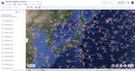

ABEJA Tech Blog
https://tech-blog.abeja.asia/
中の人の興味のある情報を発信していきます
フィード

ロボティクス領域の VLA モデル「π0」の仕組みを理解する 4
4
ABEJA Tech Blog
こんにちは！ABEJA で ABEJA Platform 開発を行っている坂井（@Yagami360）です。 近年の ChatGPT 等の LLM の飛躍的な発展とマルチモーダル化の流れに伴い、ロボティクス領域においても LLM を活用して、テキストでロボット制御できるようになってきているようです。 LLM に対して画像を入力もできるようにして｛画像・テキスト｝でのマルチモーダル化したモデルを VLM [Vision-Language Model] といいますが、ロボティクス制御等で LLM を活用できるように更にこれを拡張して、ロボットのアーム制御などの行動ベクトルも入力できるようにして｛行…
3日前
OpenAIのAny-to-Any APIでTTSサービスの音声品質を比較してみた 4
ABEJA Tech Blog
はじめに 比較対象のTTSサービス 実験の方法 実装 各サービスで音声合成 1. OpenAI（gpt-4o-mini-tts) 2. Google Cloud Text-to-Speech 3. Amazon Polly 5. ElevenLabs 音声合成の自動評価 評価結果 まとめ We Are Hiring! はじめに こんにちは！ABEJA でソフトウェアエンジニアを務めている宇留嶋です。2025 年 3 月に OpenAI が発表した次世代音声モデル群は、従来の Whisper を凌ぐ高精度な音声認識と、話し方まで指示できる音声合成をAPI で提供し、音声対話向けの LLM API…
8日前

Starlinkに会いに行こう：Go言語で人工衛星の位置計算にチャレンジ 1
ABEJA Tech Blog
はじめに 必要知識 TLE (Two Line Element) ケプラーの方程式 (第二法則：面積速度一定) ケプラーの方程式 (第三法則：公転周期の2乗 ∝ 軌道長半径の3乗) 本初子午線 （Prime Meridian） 春分点 （Vernal Equinox Point） グリニッジ恒星時 （Greenwich Sidereal Time: GST) 計算の流れ（全体像） 各部の計算の流れ TLEを解析 元期からの経過時間を計算 軌道長半径を計算 平均近点角を更新 ケプラー方程式を解き、離心近点角を得る 軌道面上の(u,v)座標を得る 摂動補正を適用 軌道面座標からECI座標系に変換 …
8日前

ESP32 x Prometheusで温度・湿度・気圧データを蓄積・可視化する (v2) ～BLE利用～
ABEJA Tech Blog
はじめに 今回の構成（前回差分） BLE通信について Pushgatewayについて ソフトウェア周り コンテナ定義 Prometheusの設定 (Pushgateway対応) ESP32 (BME280データ取得 x BLEデータ送信) Pythonコード (BLE受信 x Pushgateway送信) 最後に（実際の動いている様子） We Are Hiring! はじめに お久しぶりです！ABEJA大田黒です。自作ESP32基盤に温度・湿度・気圧を計測できるセンサー（BME280）を接続し、Grafanaで可視化する仕組みを作りました。詳しくは下記の技術ブログ記事にて執筆しています。 te…
16日前
Reasoning能力を付与したLLM ABEJA-QwQ32b-Reasoning-Japanese-v1.0の公開
ABEJA Tech Blog
ABEJAでデータサイエンティストをしている服部です。 弊社は、経済産業省とＮＥＤＯが実施する、国内の生成AIの開発力強化を目的としたプロジェクト「GENIAC（Generative AI Accelerator Challenge）」の1期に続き、2期にも採択され、そこで大規模言語モデルの開発を進めています。 2期プロジェクトで取り組んでいるモデルとして、1月にABEJA-Qwen2.5-32b-Japanese-v0.1 を公開しました。 今回は、同じく32Bのモデルとして、1月に公開したモデルにReasoning能力を付与した ABEJA-QwQ32b-Reasoning-Japanes…
19日前
最高の入社体験を創ろう！新メンバー入社時にチームで心がけている事
ABEJA Tech Blog
はじめに ABEJAの大田黒です。ここ3〜4年にわたり、社内のエンジニア採用やオンボーディングプロセスに深く関わってきました。就職・転職という人生の大きな節目において、ABEJAを選んでくれたすべての方に「HAPPY」な入社・業務体験をしていただくための取り組み（TIPS）について、簡単にご紹介できればと思います。 ※本TIPSは、我々のグループ（CTO室プラットフォーム共通基盤G、CTO室プラットフォームアプリケーションG）で行っている施策の一部になります。 ちなみに、入社時・入社前は様々な不安があります。私自身もそうでした。 自分の技術や経験がどこまで活かせるかがわからない 優秀な人が多そ…
21日前
【ABEJAアジャイル活動記録】スクラムマスターの8つの姿勢：リーダーシップから変革まで
ABEJA Tech Blog
ABEJA でスクラムマスターとアジャイルコーチをしている小川です！ ゾンビスクラムサバイバルガイドの著者の一人であるScrum.orgのBarry Overeemさんがまとめた「The 8 Stances of a Scrum Master」ってご存知でしょうか？ スクラムマスターが個人、チーム、組織に貢献するためにどのように振る舞うべきかが詳しく述べられていて非常に勉強になります！ 原典はこちら：The 8 Stances of a Scrum Master Whitepaper v2.0 とても良い内容なのですが、あまり日本語で紹介されている感じではないので、ここでぜひご紹介をしたいと思…
22日前
ABEJA Qwen2.5 32B-Japaneseより更に軽量なABEJA Qwen2.5 7B-Japanese v0.1の公開
ABEJA Tech Blog
ABEJAでデータサイエンティストをしている真鍋です。 弊社は経済産業省と国立研究開発法人新エネルギー・産業技術総合開発機構（NEDO）が実施する、国内における生成AIの開発力強化を目的としたプロジェクト「GENIAC（Generative AI Accelerator Challenge）の1期に続き、2期にも採択され、そこで大規模言語モデルの開発を進めています。 www.abejainc.com 1月の記事で、50B以下で高性能な日本語モデルとして、ABEJA Qwen2.5 32B-Japanese v0.1を公開しました。 今回は、さらにパラメータ数を抑えた10B以下のモデルをベータ版…
22日前
MicrosoftのGraphRAGを使ってみた
ABEJA Tech Blog
初めに データ準備 環境準備 インデックスの作成 回答の生成方法 Local search Global search グラフの可視化 サトシのエンティティ リザードンのエンティティ 回答してみる GrapgRAGなし Global search Local search 少し難しい質問をしてみる まとめ 初めに こんにちは、ABEJAでデータサイエンティストを務めている嘉藤です。今回はMicrosoftが発表した、GraphRAGを試してみました。GraphRAGは、テキストデータからLLMを用いてグラフ構造を生成し、生成されたグラフ構造を用いて質問応答を行うためのツールです。今回は、簡単に…
3ヶ月前
50B以下で高性能なABEJA Qwen2.5 32B-Japanese v0.1の公開
ABEJA Tech Blog
ABEJAでデータサイエンティストをしている服部です。 弊社は経産省が主催するGENIACプロジェクトの1期に続き、2期にも採択され、そこで大規模言語モデルの開発を進めています。 今回、その2期プロジェクトで取り組んでいるモデルをベータ版として公開できる段階に到達したので、Huggingface上に公開しました。 公開したモデルは、Alibaba社が開発したQwen2.5-32B-Instructをベースとしており、ライセンスもベースモデルと同様に、apache2.0として商用利用OKな形で使っていただけます。 huggingface.co このブログでは概要及び性能について簡単にまとめていま…
4ヶ月前
今から始める NeoVim 生活 (序章)
ABEJA Tech Blog
こちらはABEJAアドベントカレンダー2024の25日目の記事です。 こんにちは！システム開発部の合屋（ごうや）です。 日々の開発で今年も様々なツールにお世話になっておりますが、近頃はPCのリソースが不足し、日々悩むようになってしまいました。 特に問題になっているものは Visual Studio Code （VSCode）周りです。 便利にしようと膨大なプラグインを入れてしまい、起動に時間がかかるうえ、リソースをふんだんに使うように…。 エラーや型ヒント、自動補完などは嬉しい。 けれども、起動が遅かったり、動作がカクついたりとストレスフルなのも避けたい。 素敵な方法を探しにインターネットを彷…
5ヶ月前
RAGの足りない精度は運用でカバーしよう
ABEJA Tech Blog
はじめに Human in the Loop システム概要 ワークフローの解説 ワークフローの分岐 静的・動的なナレッジベースの使い分け 実装手順 用意するもの メールサービスの準備（IMAP有効化） Difyの準備 Google Work Spaceの準備 スプレッドシートの準備 スクリプト概要 GASの準備 実運用 テスト 運用担当者に渡すマニュアルのイメージ さいごに 人にできることはまだあるかい その他 We Are Hiring! はじめに こんにちは、ABEJAでプロジェクトマネージャーをしている服部と申します。これはABEJAアドベントカレンダー2024の24日目の記事です。昨年…
5ヶ月前
Qwen2.5 Technical Reportの中に潜る
ABEJA Tech Blog
ABEJAでデータサイエンス部の部長をしながら色々やっている大谷です。 今回は2024年12月19日に公開された待望のQwen2.5 Technical Reportについて日本語に翻訳しつつ、適宜コメントを入れていく記事を書いていこうと思います。コメントはですます口調で記述しています。 先にネタバレですが、Qwen2.5は特別新しい技術を導入しているわけではなく、これまで積み重ねてきた知見を着実に活かして精度を向上させています。この記事では、新しい観点の発見というよりも、これまでの有効な知見を再確認するきっかけにしていただければ嬉しいです。 ちなみにこちらの記事はABEJAアドベントカレンダ…
5ヶ月前
M-1グランプリの裏で「一番面白いLLM」を決めるLLM-1グランプリを開催してみる
ABEJA Tech Blog
はじめに ABEJAでデータサイエンティストをしている真鍋です。本日はアドベントカレンダー22日目の記事になります。 今回も生成AI、特にLLM (大規模言語モデル) 系のネタです。前回のネタに比べると箸休め記事感がありますが、お付き合いいただけますと幸いです。 タイトルの通りですが、本日はM-1グランプリなので、お笑いにちなんだ企画です。 はじめに 「お笑い」とLLM 準備 環境準備 漫才のプロンプト設計 「漫才」の生成結果 審査員のプロンプト設計 結果発表 ファイナルステージ まとめ We are hiring!! 「お笑い」とLLM 前提として、LLMを活用される場面は、仕事や日常のお困…
5ヶ月前
Go の HTTP Server でちょっと変わった使い方をして起きた障害の調査と解決
ABEJA Tech Blog
こんにちは、システム開発部で見積もりしたり設計したりコード書いたりテストしたり運用したりしている小笠原です。こちらは ABEJA アドベントカレンダー 2024、21日目の記事です。 さて、エモい記事は他の皆が書いてくれるだろうから自分はバズからは程遠いニッチな記事でも書くか、、、と思っていたら、最高に頭のおかしいニッチな記事がすでに公開されていて、ネタを考え直そうかと頭を抱えたのですが、初志貫徹してやっぱりニッチな障害解決の話をお届けしようと思います。 発端 コードリーディング 自前のコード Server.Serve netutil.LimitListener 解決 まとめ We Are H…
5ヶ月前
衛星データ × マルチモーダルLLM で出店計画を立てたい
ABEJA Tech Blog
こんにちは。ABEJAでエンジニアをしている山下です。 こちらはABEJAアドベントカレンダー2024 20日目の記事です。 はじめに 最近、衛星データx LLMハッカソンというイベントに参加しました。 宇宙ビジネスの観点に染まりきっていないフレッシュなアイデアが多くあり、非常に刺激的なイベントでした。 その中でも特に感銘を受けた実装があり、自分でも試してみたいと考えました。 そこで今回、自分なりの解釈で再発明したいと思います！ 今回開発する実装 LLMを使った実装二本立てになります。 衛星画像からある家をピックアップし、その家に住んでいる人物のプロフィールをLLMに妄想してもらう。 プロフィ…
5ヶ月前
【Python 3.13】 GILの狭間を攻めてみる
ABEJA Tech Blog
GILとは Pythonの世界から抜け出してみよう（PythonからC言語関数を呼び出す） C言語関数とPython関数を比較してみる（GIL有効） C言語関数とPython関数を比較してみる（GIL無効） （おまけ）トップレベルの並列化とローレベルな並列化を比較してみる 最後に We Are Hiring! こちらはABEJAアドベントカレンダー2024 20日目の記事です。 プラットフォームアプリケショングループの平原です。 Python 3.13からGILを無効にすることができるようになりました。 ですが、GILがどのように影響するかを理解していないと、 GILを無効にすることで得られる…
5ヶ月前
SpaceXのロケット技術を、自作シミュレーターで解説する
ABEJA Tech Blog
私が紹介したいのはSpaceXの根幹をなすロケットの制御技術についてである。技術紹介をするためにシミュレーターを自作し手動と自動制御で着陸の難しさを体感してもらおう。
5ヶ月前
Azure OpenAI Service で設定ミスって1,000万円請求されたくない！
ABEJA Tech Blog
この記事は ABEJA アドベントカレンダー 2024 の19日目の記事です。 こんにちは。システム開発部の鈴木（@szpshota）です。 3年くらい前にエンジニアとして入社して、去年の暮れくらいからマネージャーをやっています。 今でも業務含めてコードは書いてますが、組織力や生産性を高めるための仕組みづくりや組織運営が主な仕事になってきました。 今回は組織マネジメントの話・・・ではなく、怖ーい Azure OpenAI Service の高額請求の話と Terraform の話をしようと思います！ 目次は以下の通りです。 Azure OpenAI Service の高額請求について Prov…
5ヶ月前
swift-transformers で LLM を動かしてみた
ABEJA Tech Blog
ABEJA でエンジニアをしている石川です。これは ABEJA アドベントカレンダー 2024 の 18 日目の記事です。 CoreML で機械学習モデルを動かす swift-transformers を試す Mistral 7B モデルを動かす swift-transformers で推論を実装する Python で動かしてみる CoreML モデルに変換 Swift で動かす パフォーマンス We Are Hiring! macOS/iOS で機械学習モデルを動かすにはいくつかの方法がありますが、Apple シリコンの能力を十分に引き出すためには CoreML を使うのが最適です。 Pyt…
5ヶ月前
非エンジニアの救世主？！ノーコード版Streamlit『Writer Framework』を試してみた
ABEJA Tech Blog
こちらはABEJAアドベントカレンダー2024 17日目の記事です。 こんにちは、ABEJAでプロジェクトマネージャーをしている高崎です。 はじめに 最近、v0やClaude ArtifactのようなAIを活用したコード生成やノーコードツールが注目を集めています。そんな中でも、プロトタイプ開発においては、スピーディさとカスタマイズ性を求める声が多く、ABEJAではStreamlitを使用することが多いです。 しかし、StreamlitはPythonに慣れていないメンバーにとってはハードルが高いツールでもあります。そこで、ノーコード版Streamlitとも呼ばれる「Writer Framewor…
5ヶ月前
Agent を活用して多種多様なテーブルデータのフォーマット統一化を試みる
ABEJA Tech Blog
こんにちは！ABEJAでエンジニアをしている飯嶌です。これはABEJAアドベントカレンダー2024の16日目の記事です。 弊社では、ABEJA Platformに組み込まれた一つのアプリケーションとして「ABEJA Insight for Retail」を提供しています。このサービスには、IoTデバイスで取得したデータと、取り込んだPOSデータをもとに分析できる機能が備わっており、主には小売業界で活用されています。 POSデータは企業様からお預かりお預かりいただいたものですが、企業ごとにフォーマットや内容が異なり、多種多様です。 今回は、LLMを活用してそのようなデータのテーブルフォーマットの…
5ヶ月前
スクラムチームがXPを使ってみたら…柔軟な開発の裏にある成功と課題
ABEJA Tech Blog
スクラムだけじゃない！XPを取り入れたことで見つけた開発の新たな可能性とは？📈 この記事では、アジャイルコーチとしてABEJAのチームでスクラムにエクストリームプログラミング（XP）を組み合わせてみた実践経験をシェアします。オンサイトカスタマーとの密なコラボレーション、スピード感あふれるイテレーション、そしてスプリントとXPのハイブリッドで見えた成功と課題とは？🎯
5ヶ月前
Bluefruit LE Sniffer x WiresharkでBLE通信を見てみる
ABEJA Tech Blog
1.はじめに 2.セットアップ手順 2.1 Snifferの購入 2.2 Wiresharkのインストール 2.3 nRF Snifferのインストール extcapフォルダのコピー Profileのコピー pyserialのインストール 動作確認 2.4 Wiresharkの起動 2.5 Snifferコードの一部修正 3.実験 3.1 ESP32を使った準備 3.2 ESP32アドバタイズの様子 3.3 セントラルからの接続 3.4 GATTによるデータ通信 セントラル→ペリフェラルへのデータ取得要求 (Read) ペリフェラル→セントラルへのNotify (通知) セントラル→ペリフェラ…
5ヶ月前
リモートのエンジニアチームに捧ぐ！今年使ってみて便利だったツールを厳選してみた
ABEJA Tech Blog
これはABEJAアドベントカレンダー2024の13日目の記事です。 こんにちは、ABEJA Platform に搭載しているアプリケーション、「ABEJA Insight for Retail」の開発と運用を担当しているチームのリーダーを務めている森永です。 突然ですが、 みなさんのチームではどんなリモートワークの工夫をしていますか？？ ABEJA 内のエンジニアリングに関わるチームでは、フルリモートでの働き方を取り入れており、弊チームでも関東圏外から参画しているメンバーが複数在籍しています。 最近はリモートワーク下でのマネジメントの難しさや会社資産の有効活用を謳い、各社ともに RTO の動き…
5ヶ月前
生成AI時代にあえて一からプログラミングで作曲してみた
ABEJA Tech Blog
本記事はABEJAアドベントカレンダー2024 12日目の記事です。 こんにちは！データサイエンティストの安倍（あんばい）です。 競馬事業部部長を勝手に名乗り、社内にて競馬布教活動に従事しています。今年も順調に収支はマイナスです。 さて、今回のテーマは「作曲」になります。生成AIブームの昨今、誰でも簡単に文章や画像、音楽、コードetc. 何もかも生成できる時代になりました。 このタイミングであえて時代に逆行し、「理論ベースで一からプログラミングで曲を作る」という逆張りの取り組みをしたので紹介したいと思います。 目次 目次 音とは何か 疑似データ生成 複雑な波を分解する 基本波形の紹介 サイン波…
5ヶ月前
型安全かつシンプルなAgentフレームワーク「PydanticAI」の実装を解剖する
ABEJA Tech Blog
はじめに こちらはABEJAアドベントカレンダー2024 12日目の記事です。 こんにちは、ABEJAでデータサイエンティストをしている坂元です。最近はLLMでアプローチしようとしていたことがよくよく検証してみるとLLMでは難しいことが分かり急遽CVのあらゆるモデルとレガシーな画像処理をこれでもかというくらい詰め込んだパイプラインを実装することになった案件を経験して、LLMでは難しそうなことをLLM以外のアプローチでこなせるだけの引き出しとスキルはDSとしてやはり身に付けておくべきだなと思うなどしています（LLMにやらせようとしていることは大抵難しいことなので切り替えはそこそこ大変）。 とはい…
5ヶ月前
Embedding Model を用いたキーフレーズ抽出の検証といろんな Embedding Model の比較
ABEJA Tech Blog
こんにちは！ABEJAでデータサイエンティストをしている藤原です。ABEJAアドベントカレンダー2024 の11日目のブログになります！ キーフレーズ抽出を簡単に試すという機会がよくあるのですが、簡単に検証する範囲だといつも同じツール・モデルを使っているため、他の方法でも上手くキーフレーズ抽出ができないか？ということで今回いくつか検証してみました。やることとしては、まず Embedding Model を使って日本語の長めの文章からキーフレーズを上手く抽出できるか？というのを検証します。その上で、色々な Embedding Model 間で抽出されるフレーズがどのように違うか？も比較してみます…
5ヶ月前
5年分のNotionのリリースノートを振り返ってみた ~社内運用と個人Webサイト運営での学びを添えて ~
ABEJA Tech Blog
はじめに 皆さん、お久しぶりです。ABEJAで細々とNotion普及活動をしている齋藤です。 こちらは ABEJAアドベントカレンダー2024 の10日目の記事です。 他にも弊社メンバーが面白い記事をどんどん投稿予定なので、是非チェックしてみてください。 このブログで語りたいこと 2024年はChatGPTなどのLLMが多くのソリューションに導入され、多くのユーザーがLLMの恩恵を享受する1年となりました。 例に漏れず、NotionからもLLMによるQ&A機能や、ドキュメントの自動生成機能がリリースされました。 そこで、今回は今まで私が書いたNotionの記事を横目に、利用者視点でNotion…
5ヶ月前